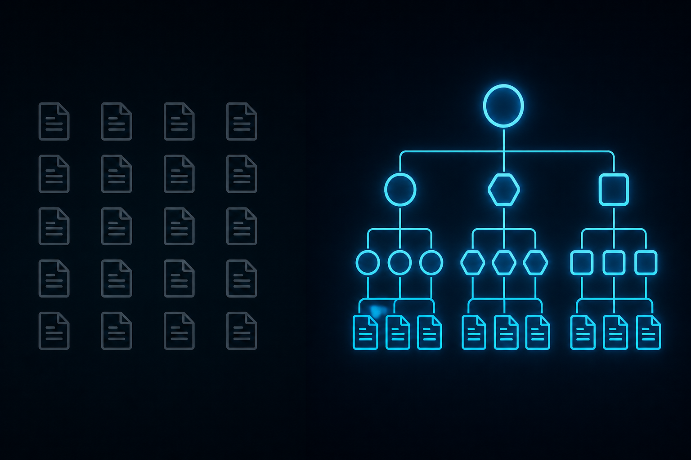

May 2026The ladder itselfLevel 3 · ContextSkills
L3: Context Engineering
Second brain, not second mind.

The Bigger Prompt Problem
L3 is context engineering. You give the agent knowledge.
The methods all sound familiar: RAG, vector databases, "second brains," knowledge bases, embeddings, semantic search, skills. Karpathy popularized the "second brain" framing — an LLM with a wiki of your stuff bolted on. Every dev tool company shipped some version of this in 2024-2025.
L3 works. An agent with a good retrieval layer outperforms a stateless agent by a wide margin. It knows your codebase, your docs, your past tickets. It stops asking you the same question twice.
But context without structure is just a bigger prompt.
You can dump 50 pages of SOPs into the context window. The agent will read them. And it'll still produce something that contradicts page 23, because reading is not the same as understanding compositionally. RAG retrieves words. RAG does not retrieve structure.
A second brain stores WHAT. A second mind imposes HOW. Most "AI memory" products ship the first and bill it as the second.
Wiki vs Cognitive Architecture
A wiki is a flat collection of documents. Each document is content. The agent retrieves a document by similarity (vector search) or by keyword. The document goes into the prompt. The agent reads. It hopes it understands.
A cognitive architecture is a structured graph of concepts where every concept is typed, every relationship is explicit, and every retrieval respects the structure. The agent doesn't retrieve "the document that mentions X." It retrieves "the concept of X, what X is_a, what X is part_of, what X depends_on, and the active context X belongs to."
The wiki gives you words. The cognitive architecture gives you a shape.
Our cognitive architecture is called CartON. It's a Neo4j + ChromaDB hybrid. Concepts are typed nodes. Relationships are typed edges. Every concept must declare what it is, what it's part of, what it instantiates. Floating concepts get rejected. The structure isn't decoration — the structure is the difference between an agent that quotes your docs and an agent that thinks in your domain.
Skills: The Active Context Pattern
The most useful L3 abstraction we've found is the skill.
A skill is a package: a SKILL.md file with a what/when description, optional reference docs, optional scripts, optional templates. The agent's runtime decides when each skill applies. When it applies, it loads. When it doesn't, it stays out of the way.
Our skill system has three categories. The category isn't decorative — it determines how the skill behaves at runtime:
understand: PURE CONTEXT. Loads knowledge. No action implied. "Understand X" means "remember X for the rest of this conversation." preflight: CONTEXT + WORKFLOW POINTER. Loads knowledge, then directs the agent to a specific flight config. "Preflight Y" means "you're about to do Y, here's what you need to know first." single_turn_process: CONTEXT + IMMEDIATE ACTION. Loads knowledge AND does the thing in one turn. "Run Z" means "here's what Z is and here's the result of doing Z, now."
This distinction is what separates a skill system from a wiki. A wiki tells you what something is. A skill tells the agent what to do with the fact that this thing is relevant right now.
Why Most "AI Memory" Products Fail
Almost every "give your AI memory" SaaS in the market right now is a wiki dressed as a cognitive architecture. They store conversation history, they embed it, they retrieve by similarity. That's it. That's the whole product.
The failure modes you hit at scale:
- Conflicting memories. The agent remembers a fact from January and a contradictory fact from March. It retrieves both. It picks one at random. There's no structure to resolve the conflict.
- Stale context. A retrieved memory references a process that's since changed. The agent doesn't know the memory is stale because there's no concept of "this depends on a thing that has versions."
- Hallucinated coherence. The agent stitches together five unrelated memories into a confident narrative that never actually happened. No structural validation, no defense.
- Capability collapse. The agent retrieves five docs that each say "do X." It doesn't know X has subtypes, that this case is a different subtype, that the docs apply differently. It picks one and runs.
You can't fix these with better embeddings. You fix them by upgrading from "store text" to "store typed concepts with typed relationships and retrieve through structure." That's L3 done right. That's the distance from second brain to second mind.
What L3 Done Right Looks Like
An agent operating at full L3:
- Loads a domain-specific cognitive architecture at the start of each task.
- Activates only the skills relevant to the current intent.
- Retrieves concepts by structure, not just by similarity — "what is this part of?" not just "what looks like this?"
- Respects type and hierarchy when it composes a response.
- Knows what it doesn't know, because missing concepts in the graph are explicit, not absent.
This is still not L5. The agent at L3 can still be wrong — it can still compose validated parts into an invalid claim. That's what L5 fixes. But L3 done right is the floor of "the agent has a brain that's actually shaped like the domain it's working in."
RAG is reading. Skills are knowing what to do with what you read. Admissibility (L5) is being right about it. They are not the same problem.
The L3 Ceiling
Even a perfect L3 agent — perfect ontology, perfect retrieval, perfect skill packaging — will still hallucinate. It will still compose a wrong claim from individually-correct parts. Because L3 controls what the agent has, not what the agent says.
The next floor up is harnesses. L4 is the runtime around the agent that decides what flows in and what flows out — the layer that turns scattered L3 knowledge into a system that acts. We'll cover that next.